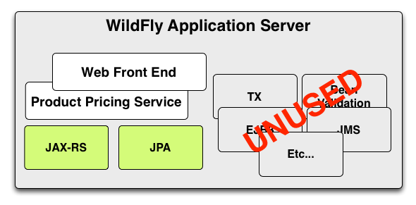

Microservices in a Java EE World
Red Hat / JBoss / Project:Odd
But Wait
Isn't this just SOA?
Key Distinctions
- Deployment
- Scalability
- Configuration
Deployment
- Single artifact deployment
- Independently / continuously deployable
Scalability
- Independently scalable
- Small, focused teams
- Technology independence
Configuration
- Convention over configuration
- JEAS (Just Enough App Server)
Potential Hurdles
- Complexity inherent in a distributed system
- Potential operational complexity
- Transactions
- Tooling
So... Why?
Typical WildFly SOA Deployment
Typical WildFly SOA Deployment
OK, You Sold Me
But... How?
Terminology
- Uberjar
- Fraction
Uberjar
A single .jar file containing your application, the portions of WildFly required to support it, an internal Maven repository of dependencies, plus a shim to bootstrap it all.
Fraction
A well-defined collection of application capabilities. May map directly to a WildFly subsystem, or bring in external capabilities such as Netflix Ribbon.
A Simple App
Main.java
public class Main {
public static void main(String... args) throws Exception {
// Create a simple shrinkwrapped JAX-RS app
Container container = new Container();
JAXRSArchive deployment = ShrinkWrap.create(JAXRSArchive.class);
deployment.addPackage(Main.class.getPackage());
// Make it discoverable via Ribbon
deployment.as(RibbonArchive.class).setApplicationName("pricing");
deployment.as(Secured.class);
container.start();
container.deploy(deployment);
}
}
A Simple App
PricingResource.java
@Path("/")
public class PricingResource {
@GET
@Path("/book/{id}")
@Produces("application/json")
public Integer search(@PathParam("id") String id, @Context SecurityContext context) {
KeycloakPrincipal principal = (KeycloakPrincipal) context.getUserPrincipal();
if ( principal != null && principal.getKeycloakSecurityContext() != null ) {
return 9;
}
return 10;
}
}
A Simple App
pom.xml
org.wildfly.swarm
wildfly-swarm-jaxrs
A Simple App
pom.xml
org.wildfly.swarm
wildfly-swarm-plugin
org.wildfly.swarm.booker.pricing.Main
3
package